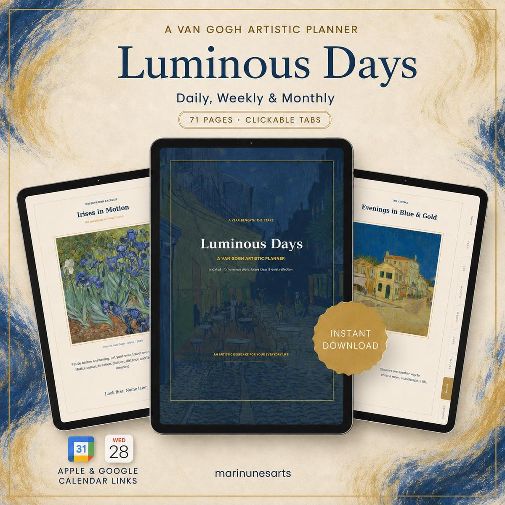

Planner digital inspirado em Van Gogh
Luminous Days
US$ 10 download digital
Um planner sem datas, com 71 páginas, que junta organização e arte: planejamento diário, semanal e mensal, diários de leitura e de cinema e exercícios de observação com obras de Vincent van Gogh.
O pagamento e o download acontecem pela Etsy. O arquivo fica disponível assim que a compra é confirmada.
- Páginas
- 71
- Datas
- Sem datas, use em qualquer ano
- Arquivo
- 1 PDF em alta resolução
- Idioma
- Inglês
- Apps
- Goodnotes, Notability, Noteshelf, Xodo e outros que abrem PDF com links